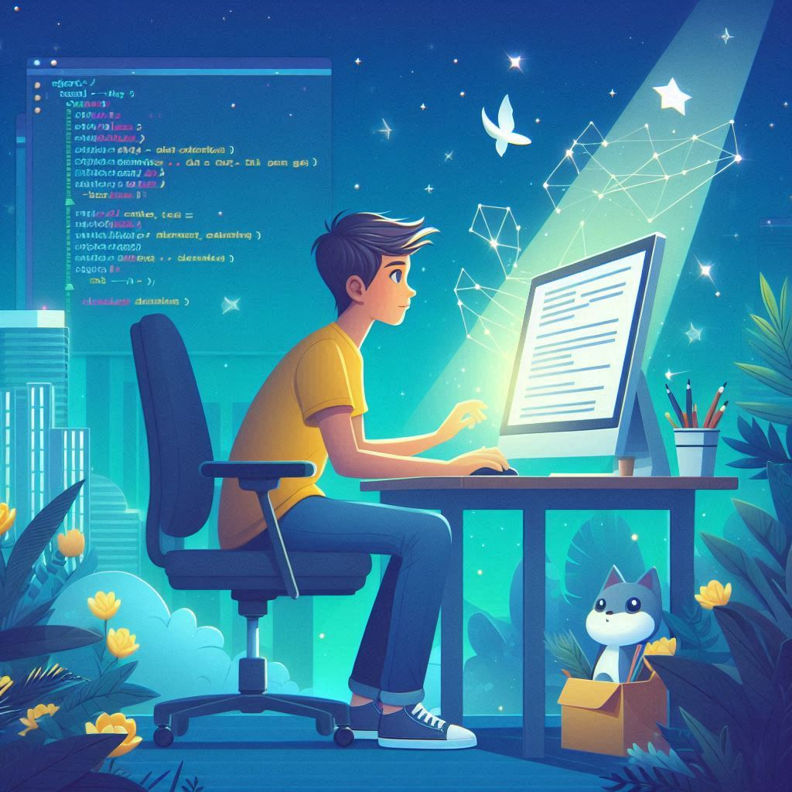
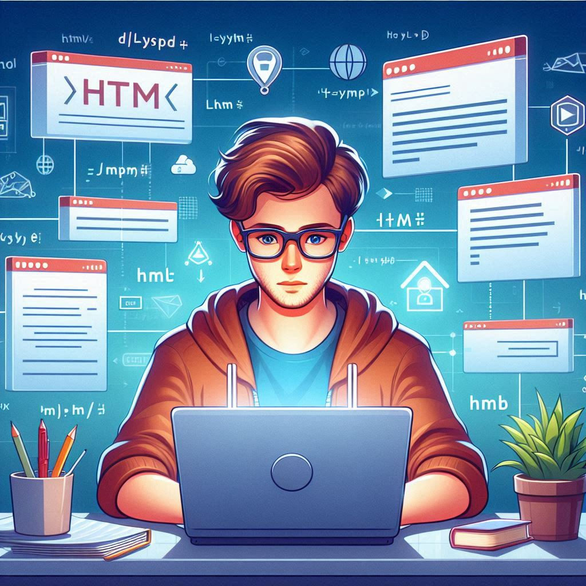
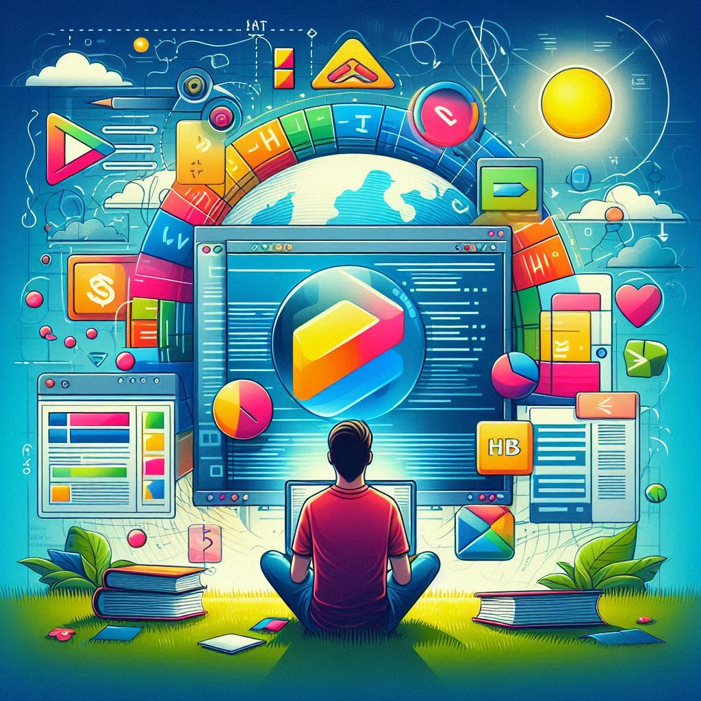
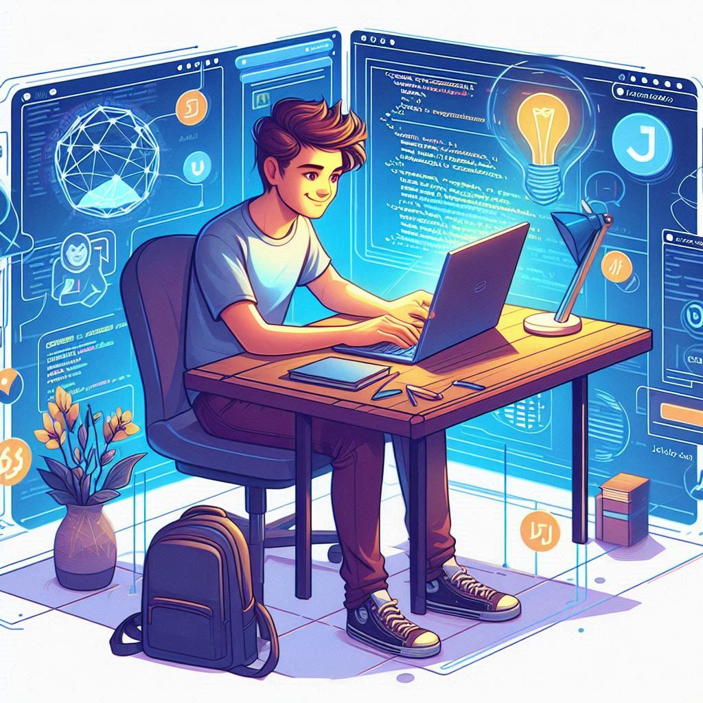
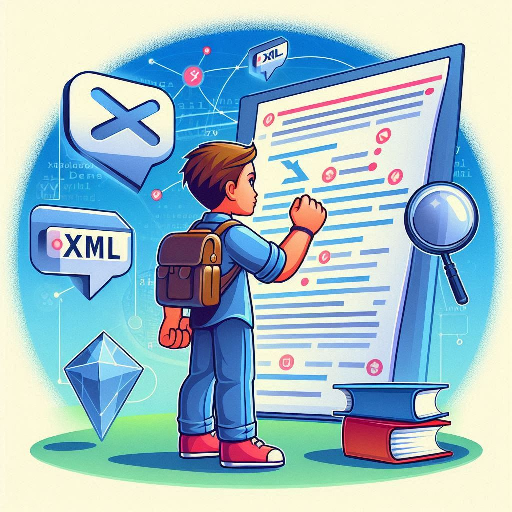
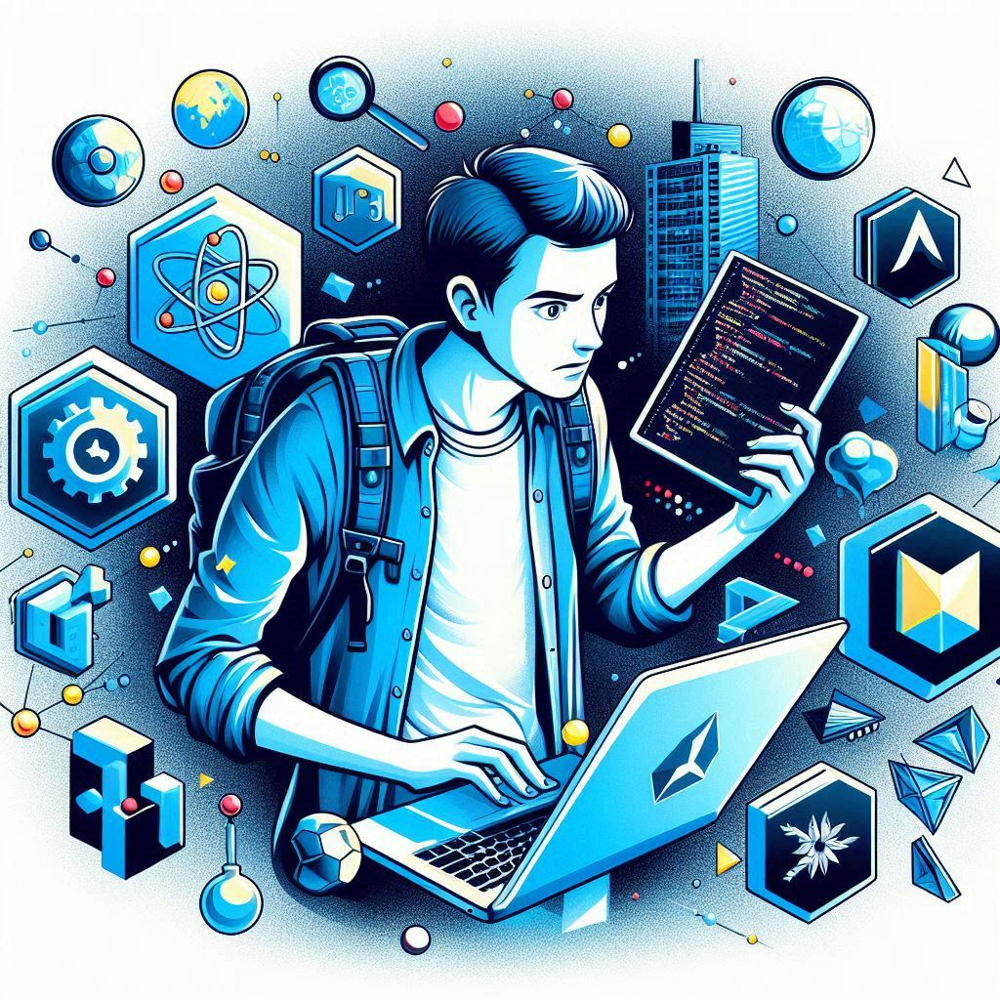
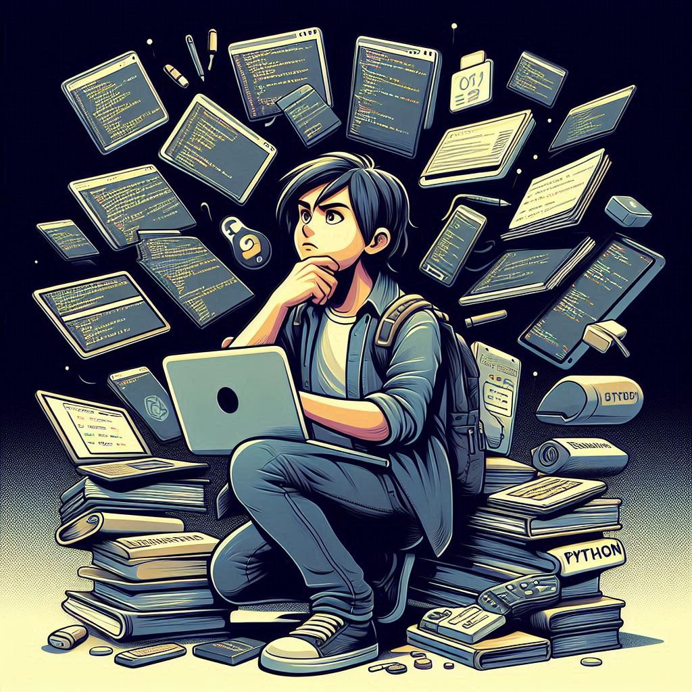
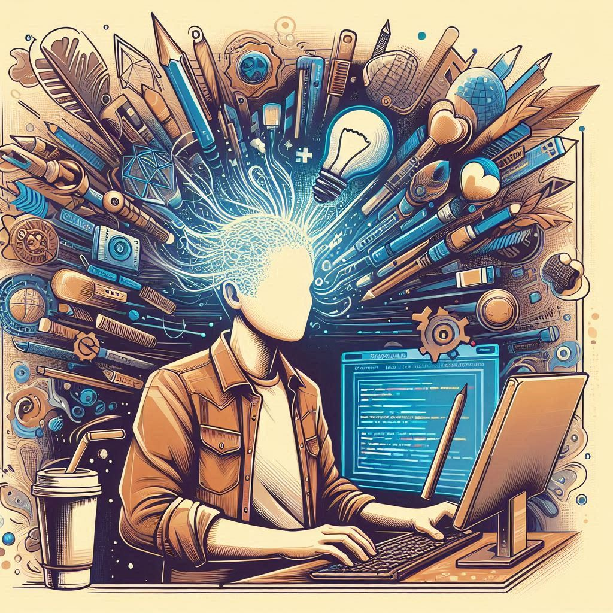

Capítulo 1
Era uma vez, em um mundo digital cheio de possibilidades, um jovem desenvolvedor chamado Lucas. Ele estava decidido a se tornar um mestre no desenvolvimento front-end, criando experiências web incríveis que encantassem os usuários e trouxessem magia à internet.
Capítulo 2
Lucas começou sua jornada com HTML (Hyper Text Markup Language), a linguagem de marcação fundamental para estruturar e exibir conteúdo na web. Ele aprendeu a criar páginas com textos, imagens, links e outros elementos interativos, compreendendo que o HTML era a espinha dorsal de qualquer site. Com cada tag e atributo, ele construía as fundações de seu conhecimento.
Capítulo 3
Mas Lucas sabia que a aparência também era crucial. Então, ele mergulhou no mundo do CSS (Cascading Style Sheets), a ferramenta que transforma páginas web em obras de arte visuais. Com o CSS, ele aprendeu a adicionar cores vibrantes, fontes elegantes e layouts harmoniosos, tornando a experiência do usuário não apenas funcional, mas também bela.
Capítulo 4
Para dar vida às suas criações, Lucas se aventurou na magia do Javascript. Com essa linguagem de programação, ele pôde adicionar interatividade às suas páginas. Ele criou animações fluidas, validou formulários e carregou dados dinamicamente, fazendo com que suas páginas reagissem aos usuários de maneiras surpreendentes e encantadoras.
Capítulo 5
No entanto, a jornada de Lucas não parou por aí. Ele descobriu o poder do XML (Extensible Markup Language) e do XHTML (Extensible Hypertext Markup Language), que lhe permitiram estruturar dados e documentos de forma rigorosa e eficiente. O XML se tornou uma ferramenta essencial para integrar e trocar informações, enquanto o XHTML garantiu que suas páginas estivessem sempre bem-organizadas e compatíveis.
Capítulo 6
Enquanto explorava esse vasto universo, Lucas encontrou aliados poderosos: os frameworks e bibliotecas. Ele se apaixonou pelo React, um framework Javascript popular para construir interfaces de usuário reativas e componentizadas. Em seguida, conheceu o Vue.js, um framework progressivo e fácil de aprender, perfeito para projetos de todos os tamanhos. E não demorou para se encantar com o Angular, mantido pelo Google, com seus recursos robustos para o desenvolvimento front-end.
Capítulo 7
Para tornar seus estilos ainda mais eficientes, Lucas adotou pré-processadores CSS como Sass e Lass, que permitiam escrever códigos mais organizados e reutilizáveis. Além disso, frameworks CSS como Bootstrap e Semantic UI ofereceram componentes prontos e sistemas de grid que aceleraram sua produtividade e aprimoraram o design de suas páginas.
Capítulo 8
Durante sua jornada, Lucas também experimentou outras linguagens e frameworks. Ele explorou o TypeScript, que trouxe tipagem estática e recursos avançados ao Javascript, e até mesmo linguagens como Python, Ruby, PHP, Dart, Go (Golang), Swift, C#, Rust, Kotlin, Lua, Elm, CoffeeScript, ClojureScript, ReasonML, Haxe, Scala.js, PureScript, ElixirScript, Nim e Julia. Embora muitas dessas linguagens fossem mais comuns no back-end, Lucas descobriu que poderiam ser usadas no front-end em contextos específicos, ampliando ainda mais seu arsenal de habilidades.
Capítulo 9
Ao longo dessa jornada, Lucas aprendeu que a escolha das tecnologias dependia do projeto específico e das preferências pessoais. Ele adaptou sua pilha de tecnologia conforme suas necessidades e objetivos, tornando-se um desenvolvedor versátil e experiente.
Capítulo 10
E assim, com dedicação e paixão, Lucas continuou a explorar e a aprender, transformando suas ideias em realidades digitais que encantavam e inspiravam a todos que navegavam em suas criações. Seu nome tornou-se sinônimo de inovação no mundo do desenvolvimento front-end, e sua jornada, uma fonte de inspiração para novos desenvolvedores em busca de seus próprios caminhos na vastidão da web.
